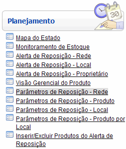
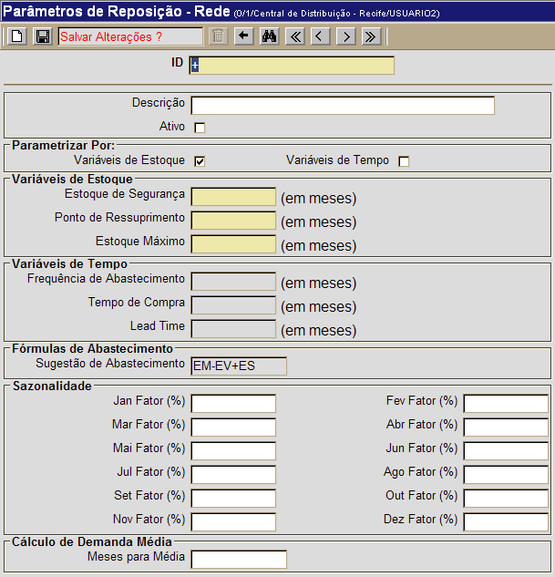

Parâmetros de Reposição - Rede [ Voltar ]
Utilize esta tela para definir os
parâmetros de reposição de toda a rede. Serão definidas nesta tela
variáveis de estoque ou tempo, fórmula de abastecimento, sazonalidade e
demanda média.
O formulário "Parâmetros de Reposição - Rede"
encontra-se dentro do menu "Planejamento".

Ao clicar no formulário, o sistema exibirá a seguinte
tela:

Os
parâmetros aqui definidos serão utilizados para o cálculo de sugestão
de requisições de compra em toda a rede. Eles serão válidos para todos
os produtos e locais, a menos que estes possuam um parâmetro de
reposição local ou de produto. Nestes casos, os parâmetros de reposição
do local ou produto se sobreporão aos parâmetros definidos para a
rede.
1º Passo: configure na tela os parâmetros de reposição para a rede. Os campos em amarelo são obrigatórios.
ID. Este campo não
precisa ser preenchido. Ele apresenta um sinal de "+" por padrão para
que, desta forma, o sistema atribua a ele, automaticamente, o próximo
número de registro disponível; Descrição. Digite aqui a descrição para a definição dos parâmetros; Parametrização. Marque uma das duas opções de parametrização de reposição: por Variáveis de Estoque ou Variáveis de Tempo; Variáveis de Estoque. Informe aqui o número de meses referentes a: Estoque de Segurança, Ponto de Ressuprimento e Estoque Máximo; Variáveis de Tempo. Informe aqui o número de meses referentes a: Frequencia de Abastecimento, Tempo de Compra ou Lead Time (Tempo de Ressuprimento); Fórmulas de Abastecimento. A fórmula de abastecimento padrão é: Estoque Máximo - Estoque Virtual + Estoque de Segurança.
Sazonalidade. Informe aqui dados específicos da sazonalidade das demandas. Exemplo, digite "20" no campo "Jan Fator (%)"
para indicar que deve haver um incremento de 20% nas sugestões
para o mês de janeiro. Para decréscimos, inclua o sinal de negativo "-"
antes do valor desejado.
2° Passo: clique no botão  para salvar os parâmetros editados. para salvar os parâmetros editados.
|